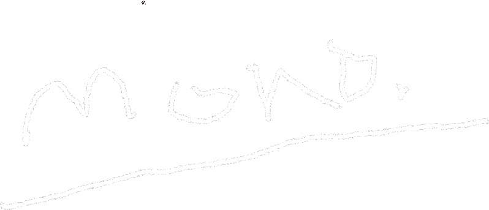

#1
"Elegí la palabra mono no solo por su significado obvio sino más bien porque al juntarse con otras terminaciones adquiere un signicado característico. (monopolio, monologo... etc)."
"Quería liberar la tensión, en vez de un album quería llamarlo playlist"
“mono” es el segundo mixtape de RM, completamente escrito, producido y cantado por él. En este albúm nos acercamos a los pensamientos que tiene el artista a diario, este mixtape funciona como un monologo interno.
CONCEPTO

- tokyo
- seoul (prod. HONNE)
- moonchild
- badbye (with eAeon)
- uhgood
- everythingoes (with Nell)
- forever rain

MAIN TRACK
forever rain
“Cuando llueve es como si tuviera un amigo golpeando mi ventana preguntándome si estoy bien y respondo que sigo siendo un rehén de la vida. No vivo porque no puedo morir pero estoy encadenado a algo”